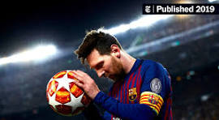

Why Messi is the best player in the history?
G

Unparalleled Technical Ability: Messi possesses extraordinary technical skills that are unmatched by any other player in history. His close ball control, dribbling, agility, and vision on the pitch are unparalleled. He has an innate ability to maneuver through defenses effortlessly, leaving opponents bewildered and unable to stop him.
O
Consistency and Longevity: Throughout his career, Messi has demonstrated remarkable consistency at the highest level of the game. He has consistently delivered outstanding performances season after season, breaking numerous records along the way. His longevity at the top, maintaining exceptional form over more than a decade, sets him apart from his peers.
A
Goal-Scoring Prowess: Messi's goal-scoring record speaks for itself. He has consistently been among the top goal-scorers in every competition he has played in, whether it's domestic leagues, UEFA Champions League, or international tournaments. His ability to score goals of all types – from long-range screamers to delicate chips and solo runs - showcases his versatility and genius on the field.
T
World Cup Triumph (Added Argument): While Messi has faced criticism for not winning a FIFA World Cup, it's essential to recognize his role as a champion on the international stage. He led Argentina to the final of the 2014 World Cup, where they narrowly lost to Germany. Despite not lifting the trophy, Messi's influence and impact on the tournament were undeniable. His performance throughout the competition demonstrated his ability to carry a team on his shoulders and compete at the highest level of international football.
In summary, Messi's combination of unparalleled technical ability, consistency, goal-scoring prowess, and his impact on the international stage, including leading Argentina to a World Cup final, solidify his status as the greatest player in football history.